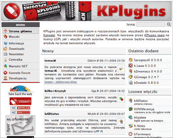
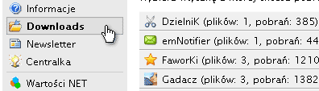
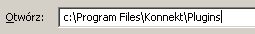
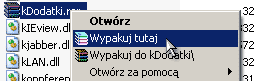
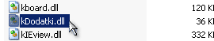
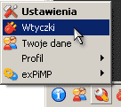
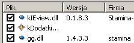
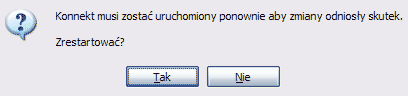

|

Możesz także skorzystać ze strony kPlugins.net - są tam wszystkie wtyczki dla Konnekt'a w przystępnej formie, niektóre ze źródłami kodu.

Listę wtyczek znajdziesz w kategorii Download, potem wtylko kliknij wybraną, i wybierz podświetlony na żółto plik, aby ściągnąć go na dysk.

Zapisz pliki do katalogu z wtyczkami - standardowo jest to C:\Program Files\Konnekt\Plugins\, lecz ogólnie interesuje Cię katalog \Konnekt\Plugins\ - to tam znajdziesz wszystkie plug-iny do Konnekt'a. Otwórz ten katalog, na przykład przez Start -> Uruchom.

W katalogu musisz mieć plik wtyczki. Ma on rozszerzenie .dll - sprawdź, czy na pewno tam się znajduje.

W otwartym Konnekt'cie kliknijcie na Ustawienia, potem na Ustawienia -> Wtyczki.

W oknie wyboru wtyczek poszukajcie waszej nowo wgranej wtyczki, będzie ona oznaczona ikonką z gwiazdką. Zaznaczcie ją klikając w polu po lewej od nazwy.

Trzeba będzie jeszcze zrestartować program, gdy ukaże się monit. Zróbcie to i gotowe!
Na górę |